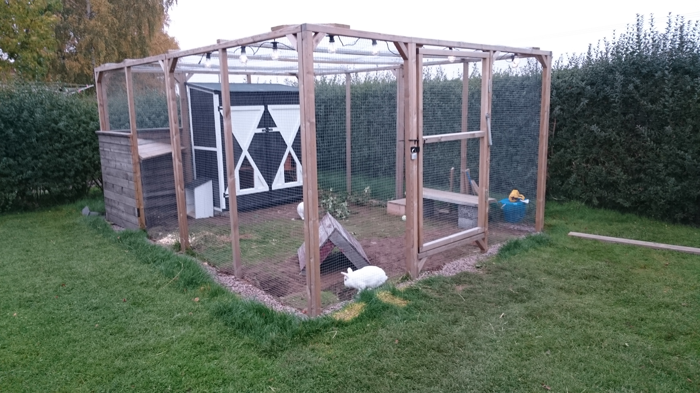

Bur: Buren ska bestå av ett hus, innegård och utegård. Den ska vara täckt av myggnät för att skyda kaninen från insektsspridda sjukdommar

Källa
Mat: Kaninen ska alltid ha tillgång till vaten och hö och ska få färsk föda och en halv dl pellets dagligen.
Klor: När du ska klippa klorna klipp bara till pulpan, klipp hällre förlite än för mycket. Om du inte kan se den pröva sätta en ficklampa under klon.
Hoppning:hoppa dagligen med er kanin. Innan du har en sele till den så ska du hoppa löshoppning innomhus. För att få den att göra som du vill prova röst kommando, rutiner och putta på dens bak.
Visitering: När du ska visitera kaninen kolla öron, ögon, näsa, päls, bur o skin. Öronen ska inte lukta illa, ögonen ska se normala ut, näsan ska vara ren, pälsen ska inte ha kala fläckar,buren ska se ut som den brukar och skinnet ska vara helt. Kollar du detta varige dag märker du om något är fel.